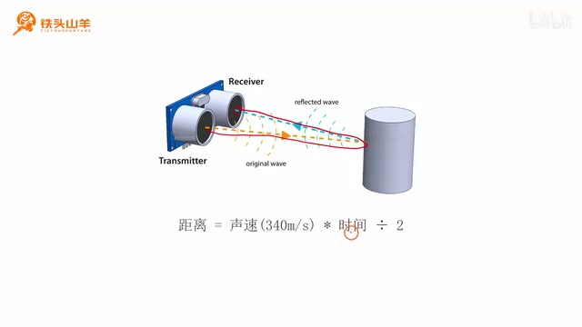
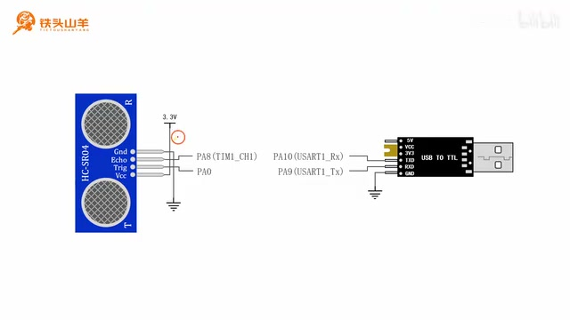
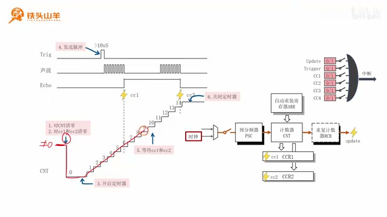
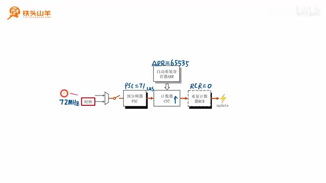
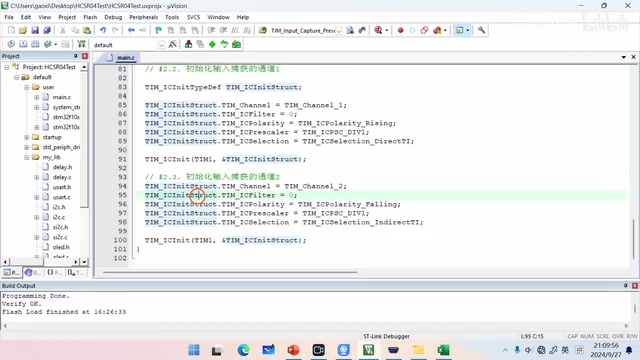
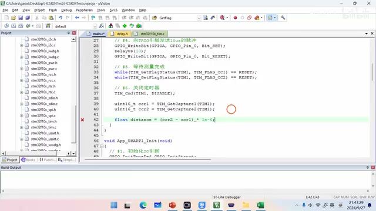
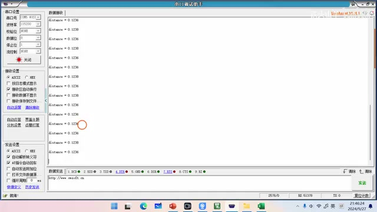

P045 · 9.6 （定时器）超声波测距实验¶
本节目标与 HCSR04 测距原理¶
各位同学大家好，我是铁头山羊，今天我们来学习第九章的第六节，首先我们先来回顾一下，在上期视频的过程中呢，我们学习了这个定时器的输入捕获，虽然说我们学习了这个输入捕获。
但是我们学的呢只是这个输入捕获的一个，基本的工作原理，关于它的具体使用方法，我们现在还不清楚，所以呢今天我给大家安排了一个实验，这个实验呢叫做超声波测距实验，通过这个实验我们一起来看一下这个输入捕获。
在实际编程的过程中应当如何去使用，首先呢请大家从我们的开发套件包里面，拿出这么一个模块，这个模块呢是一个传感器，它的名字呢这里有叫做HCSR04，这是一个超声波测距传感器，我们可以使用它呢。
去测量当前位置和障碍物之间的距离，现在呢我们把这个传感器接到我们的电路里边，然后使用这个传感器呢，去测量一下当前位置和障碍物之间的距离，比如说我们用手挡一下来模拟这个障碍物，那么现在这个传感器测得的就是它的当前位置，和我们手掌之间的距离。
测得这个距离之后，我们再使用单片机上的这么一个串口，加上这么一个USB转TTL模块，把这个测量的结果呢发送到电脑上去，这样我们就可以在电脑上去查看，这个测量的结果了，比如说我们看。
这就是我们通过这个传感器测得的一个，距离的值，然后当我们移动这个障碍物的时候呢，这个测量的结果呢，就会随着这个障碍物的位置而改变，本期视频呢我们将分成这么六个部分来讲。
HCSR04这个模块。
也就是那个超声波测距传感器，那个模块的一个使用方法，然后了解了这个模块的使用方法之后，我们第二步呢就来搭建这个电路，紧接着呢第三步分我们来梳理一下本次实验，我们一个编码的思路，那么下面第四第五第六这三个部分呢。
我们就开始编写我们的代码。
首先我们先从第一部分开始，我们先来看一下这个超声波测距传感器，这个模块的一个使用方法，下面我们来解释一下这个超声波测距传感器，的一个基本的工作原理，我们首先来看上面的这么一张图，在这张图的这个位置呢。
就是我们今天要讲的这个超声波测距传感器，那这个传感器是如何测量它和这个障碍物之间，的这么一个距离的呢，其实它的工作原理是这样的哈，首先我们注意观察这个超声波测距传感器呢，它有这么两个大眼睛，其中这左边的这个大眼睛呢。
负责向外发送超声波，而右边的这个眼镜呢负责接收反射回来的，这个超声波，然后呢在实际工作的过程中，首先左边的这个眼镜呢，先把这个超声波发送出去，然后呢它遇到障碍物之后又会反射回来。
被右边的这个眼睛接收到，而我们这个传感器测量呢，就是从声波发送到声波接收之间的，这个时间间隔，这个时间间隔呢，恰好就是这个声音在空气中传播的一个时间，对吧。
所以呢我们再利用这个时间。

示意图展示超声波从发射端到障碍物再返回接收端；距离按声速乘往返时间再除以 2 计算。 · 原片 03:03
再乘以声音在空气中的传播速度，也就是340米每秒，我们相乘之后，这个结果呢，就是这个声音在空气中走过的一个路程，而这个路程呢，恰好就等于这个传感器和障碍物之间。
距离的两倍，所以呢我们再把这个相乘的结果再除以二，这样呢我们就得到了，就是这个超声波测距，传感器和障碍物之间的一个实际的距离了，下面我们来解释一下这个传感器的一个，具体的使用方法。
我们来看左上角的这个图，左上角的这个就是HCSR04，这个传感器的一个实物图，然后我们注意观察，在这个传感器的下方这个位置呢，这里有四个引脚，那我们下面呢来看一下。
这四个引脚都是做什么用的，首先最左边的这个引脚叫做VCC，最右边的这个引脚呢叫做GND，当然这个VCC接的就是电源，正GND 接地，我们通过这两个引脚，给上面的这个传感器进行供电。
那除此之外呢，中间还有这么两个引脚，左边的呢叫做Trigger，这个Trigger呢是一个触发引脚，用来启动测量，然后右边呢这里是一个Echo 引脚，Echo 引脚呢是一个回声引脚。
用来以脉冲的形式返回这个测量的结果，然后我们再来看一下右边的这么一张图，右边这张图呢就表示我们这个超声波测距仪，传感器一个实际的工作流程哈，首先我们先来看最上面的这个波形，那最上面的这个波形呢，表示Trigger引脚的一个波形。
我们刚才说过，这个Trigger引脚呢用来启动测量，那它怎么去启动测量呢，我们可以这么做哈，我们可以向这个Trigger引脚输入一个，不小于10 微秒的这么一个脉冲信号，也就是说我们把这个脉冲信号呢。
通过这个引脚输入到这个传感器当中，然后这个传感器呢就开始工作了，当这个传感器开始工作之后呢，首先它会通过左边的这个眼睛向外发送超声波，比如说我们在这个波形图里边，用这么一段波形来表示，这个传感器发送出来的这个超声波。
这超声波的频率呢是40 kHz，然后呢它会连续发八个周期，我们可以简单的计算一下，发送的这个超声波所占的时间呢，就是差不多是0.2 ms左右的样子，然后发完这个超声波之后呢，这个Echo 引脚立刻会输出一个高电压。
我们刚才说过，这个IO引脚呢，是用来返回测量结果的这么一个引脚，然后发完这个超声波之后，这个声波呢会在空气中传播，遇到障碍物之后呢，又会反射回来。
这里呢就形成了一个回声，那我们右边的这个眼睛呢就负责接收这个回声，当所有的这个回声八个周期呢都接收完成之后，这个IO引脚上呢又会向外输出一个低电压，所以呢我们可以看到Echo 引脚上，先是输出一个高电压，然后又输出一个低电压。
那中间这里是不是就是一个脉冲啊，而这个脉冲的宽度，恰好就等于这个超声波发送结束的时间。
到接收结束的这个时间的间隔，也就是我们声音在空气中传播的一个时间，所以呢我们就可以算出，这个超声波传感器和障碍物之间的距离，就等于这个脉冲的宽度乘以声速，然后再除以二，这个就是我们最终要计算的那个距离。
因此通过刚才的分析呢，大家应该就明白了。
我们刚才这个测距的过程呢，其实就转换成了我们测量这个IO引脚上，这个脉冲宽度的这个过程，那侧面宽的这个过程呢，我们又可以使用定时器的这个输入捕获功能，来进行，所以下一步呢我们就是要使用这个输入捕获。
去测量Echo 引脚上返回的这个脉冲的脉宽，好的，刚才呢我们简单介绍了一下这个HCSR04，这个模块的一个基本的使用方法，我们在使用这个HCSR04的时候，无非就是做了两件事，那第一件事呢是向这个Trigger引脚啊。
去发送这么一个大于10 微秒的这么一个短脉冲，去启动测试，然后呢再通过这个Echo 引脚，接收这么一个脉冲信号，去测量这个脉冲的脉宽，从而呢去计算它和障碍物之间的距离。
接线并验证串口输出¶
下面呢我们就根据这个原理去搭建，我们这个实验的一个电路，我们来看这么一张图，这张图呢就是本次实验我们需要搭的这个电路，这个电路呢总共分成这么两个部分啊，左边这一部分呢是这个HCSR04这个传感器，因为我们需要使用到这个传感器测距。
所以呢我们把它放在电路板上。

HCSR04 的 Trigger、Echo、VCC、GND 引脚与 STM32、USB 转 TTL 的连接示意。 · 原片 07:30
然后右边这一部分呢，表示这个USB转TTL这个模块，因为我们要使用单片机的串口，往这个电脑呢去发送数据，所以呢我们需要接这么一个USB转TTL的模块，我们具体来看一下这个电路应当怎么去连，首先我们先来看左边的这个超声波测距传感器。
HCSR04，那这个传感器呢它总共有这么四个引脚，其中这个VCC呢当然接的就是电源，正GND 接地这两个引脚没什么问题，然后中间这两个引脚呢，其中这个Trigger是用来启动测量的。
我们刚才说过，为了启动这个测量呢，我们得通过这个引脚，向里面输入一个不小于10 微秒的这个脉冲，由于这个脉冲的时间呢不需要特别精确，所以呢我们使用一个普通的IO引脚，给他输入这个脉冲就可以了。
比如说我们选择的这个单片机的PA0，然后这个IO引脚呢用来返回这个测量的结果，它返回的形式呢是也是这种脉冲的形式，然后呢我们需要测量这个脉冲的脉宽，所以呢我们就需要使用到这个定时器的输入，捕获功能，所以我们把这个IO引脚的输出呢。
给他接到TIM1的这个通道一上，也就是PA8这个引脚，那看完了这个超声波测距传感器，我们再来看一下右边的这个USB转TTL模块，我们在单片机上呢随便选择一个串口，比如说选择这个串口一，然后呢PA9就是TS。
PA10呢就是RX，我们把这个TX 和 RRX，跟USB转TL模块的这个TX 和 RRX，给它交叉连接，这样就可以了。
然后呢，这就是我们本次实验所需要的这个接线图，我们按照这个接线图呢去连接电路，那咱们这个电路连接好之后，最终的一个效果呢是这样的，请大家从我们的课程资料里边。
找到这个模板工程，然后解压它，我们新建一个工程，把这个工程呢叫做HCSR04test，然后给里边的这个工程文件呢也重命名。
也叫做HCSR04test，给下面的这个文件也重命名，然后我们双击打开这个文件，我们找到default文件夹。
找到user文件夹，双击打开main点C，因为本次实验呢，我们需要使用到串口去传输数据，所以呢我们先来初始化一下，我们单片机上的这个串口，首先我们先假设。
我们本次实验呢使用的这个串口是UART1，然后对于这个串口来说呢，我们需要初始化的时候呢，要分成两步，首先第一步就是初始化右边的这么两个引脚。
然后第二步呢就是去初始化这个串口本身，我们先来看一下这个串口，这两个引脚的一个初始化，那对于这个USART1来说呢，它的TX 在 PA9，RX 位于 PA10，然后TX 引脚呢既然要向外发送数据。
所以呢我们需要把它初始化成AF_PP，也就是复用输出推挽，而下面的这个引脚呢因为要接收数据，所以呢我们得把它初始化成这个输入模式，比如说IPU，也就是输入上拉，我们按照这个要求呢去初始化这两个引脚。
首先呢我们先声明一个函数哈，它的名字呢叫做App_USART1_Init，看这个函数呢。
专门就是用来初始化我们的串口一的，然后我们复制这个函数的原型，放到下面进行实现，那初始化串口一的第一步就是初始化IO引脚，有两个引脚。
一个是PA9PA9呢初始化成AF_PP，然后再一个呢就是PA10，PA10呢初始化成输入上拉，首先我们先开启这个GPIOA的时钟。
然后呢我们声明一个结构体类型的变量。
这个变量里边呢给它填值。
第一个参数，我们前GPIO_Pin_9，第二个参数我们填这个GPIO_Mode，AF_PP，这个就是复用输出推挽模式，第三个参数呢填这个GPIO_Speed，也就是GPIO的最大输出速度。
比如说我们选个两兆或者是十兆也可以啊，这个随便选，然后我们对这个引脚做一个初始化，这样呢我们这个PA9也就是TX 引脚，我们就初始化好了。
下面我们再来初始化这个PA10，也就是这个RX引脚，首先也是使能这个GPIOA的时钟，这个时钟呢我们多使能几遍是没有问题的。
所以呢我们这里又重新写了一遍，这个是没问题的，然后我们复制一下上面的代码，那PA10呢要被初始化成这个IPU模式，所以我们改改一下这里的模式，这里改成IPU，然后上面这里的这个引脚编号呢改成十。
然后因为这里是输入模式，所以这个最大输出速度呢，我们不用设置把这一行删除掉，那这样呢我们这两个引脚就初始化完了，刚才呢我们已经把这两个引脚给它初始化好了。
下面呢我们需要初始化这个USART模块本身，我们这个UART模块本身的初始化呢，可以分成三小步，首先第一小步就是去开启这个U大模块，本身的一个时钟，然后第二小步呢就是设置UART模块的这些参数，第三小步呢就是闭合这里的总开关。
让我们这个USART模块开始工作起来，下面呢我们从第一部分开始，首先我们先开启这个USART模块的一个时钟，我们接着往下写哈，第二大步就是初始化USART1，首先第2.1步开启USART1的时钟。
我们写的这个代码呢是RCC_APB2PeriphClockCmd。
因为我们这个USART1呢，在这个APB2总线上，所以我们写的是这个APB2PeriphClockCmd，当然了。
你如果使用的是其他串口的话，这里的这个编程接口呢就变成了RCC_APB1PeriphClockCmd了，然后第二小步，就是初始化，USART1的参数，我们调用的这个编程接口呢是USART_Init。
这么一个编程接口，那这个编程接口里面呢，需要使用到一个结构体类型的函数，所以结构体类型的参数，所以呢我们先声明这个参数，就是这么一个参数。
然后我们给这个参数里面的所有的成员呢，给它赋值，首先第一个BaudRate，比如说我们选择最常用的这个115200，这是波特率，然后这个硬件流控呢我们不使用硬件，硬件流控对吧。
这个硬件流控呢我们也没学过啊，这里的这个none呢就表示不使用，然后第三个参数mod，也就是我们USART模块的一个方向，我们选择既发送数据，也接收数据，然后。
第四个参数是这个Parity，也就是奇偶校验，这个校验方式呢我们选择不使用校验嗯，第五个参数StopBits。
填写这个停止位的长度，我们使用最常用的这个移位停止位，再往下就是这个WordLength，也就是数据位的长度，我们用八位就好了。
再然后呢我们就调用这个USART_Init，把这两个参数呢给它传进去，OK这样呢我们USART1的这个参数就填好了。
那第三小步呢就是嗯2.3就是闭合总开关，我们调用的这个编程接口呢是UR杠CMD。
USART1，第二个参数填enable，这样呢我们这个串口的初始化的代码就写好了。
然后呢，我们把这个代码放到这个main，main方法里面去调用一下，然后我们再测试一下这个代码，比如说我们往这个串口调试助手里面呢，打印一行字符串，打印这个hello world。
那怎么去打印这个hello world呢，我们需要使用到这个MyLib库里面的，这个user.h点H这个文件哈。
所以我们先引用它，这个user.h。
这里面的函数呢都是我们之前曾经写过的，所以呢大家不用感到害怕，这都是我们自己之前自己写过的代码，然后我们就可以调用MyUSART，比如说对于MyUSART_SendString发送这么一个字符串，发送一个hello world。
啊给他加个换行回车吧。
这样呢我们这个所有的代码都写好了。
我们按左上角的第二个按钮进行编译，好的没有错误。
也没有警告，证明我们这个语法是没问题的，然后呢我们按这里的下载按钮，把这个代码呢下载到单片机当中，下一步呢我们打开这个串口调试助手哈，双击打开它，然后我们设置一下。
这个串口调试助手的一个参数，首先呢是选择这个串口号，然后波特率115200，不使用校验位，数据位呢选八位，停止位，选一位不使用硬件流控。
然后我们打开它这个接收设置呢，我们选择ask sk模式啊，现在呢我们就按一下，我们单片机的这个复位按钮，可以看到这里呢就打印出了一行。
Hello world，就证明我们这个串口呢现在可以用了，刚才呢我们已经把这个电路搭好了。
并且呢初始化好了我们单片机上的这个串口，然后下一步呢我们需要梳理一下，我们本次实验的一个思路，好为下面的这个编程呢做一个准备。
用 TIM1 输入捕获测量 Echo 脉宽¶
现在呢我们来思考一个问题，对于我们的这个HCSR04，这个传感器来说呢，它是一个超声波测距传感器，而这个超声波测距传感器，返回测量结果的方式呢，就是通过这个Echo 引脚返回来这么一个脉冲信号。
那我们现在呢需要去测量这个脉冲信号的。
这个脉宽，只有把这个脉宽测出来了。
我们才能测得出这个和障碍物之间的距离对吧。
现在问题呢就是我们怎么去测量这个脉宽呢，其实要想测量这个脉宽呢，我们就必须使用到上期视频，我们讲的这个输入捕获功能，不知道大家还有没有印象啊，这张图呢就是我们上期视频所讲的这个，输入捕获的一个内部结构框图。
这里呢我们画了两个通道，上面的是输入捕获的通道，一，下面的是输入捕获的通道，二，刚才呢我们把这个传感器的Echo 引脚，接到了我们单片机的PA8上。
这个PA8呢就是定TIM1的这个通道一哈，而这个通道二呢我们保持了悬空，那我们怎么去测量这个脉宽呢，其实我们可以用其中的一个通道呢，去捕获这个脉冲信号的上升沿，然后用另一个通道呢，去捕获这个输入信号的一个下降沿。
然后呢我们再用这两个捕获的结果呢做差，做差之后的结果呢就是这个脉冲的宽度了，比如说我们让通道一捕获它本身的这个上升沿，然后让通道二呢去捕获对侧的这个下降沿，是不是。
现在这个上升沿，这个对应的时间，就保被保存在这个CCR1当中了，然后下降沿对应的时间呢，就被保存在这个CCR2当中了，然后我们用CCR2减去CCR1，再乘以分辨率。
这样呢我们就得出这个脉宽的一个结果了，下面呢我们来看这么一张图哈，这张图呢就是我们测量的整个的一个过程，只要大家把这张图看明白了。
那么下面呢我们就可以开始编程了，那这张图里面呢有这么几个波形哈，我们分别解释一下，首先这个Trigger呢是传感器的，这个Trigger引脚，也就是启动引脚，我们需要向传感器发送这么一个。
大于10 微秒的脉冲，那么这个测量过程呢才会启动，那启动了这个测量过程之后，下面的这个就是声波，这里表示发送出去的声波，这里表示遇到障碍物之后返回的这么一个回声，然后下面这个引脚呢是Echo 引脚。
这是Echo 引脚的一个波形，Echo 引脚呢用来返回测量结果，这个脉冲的宽度呢，就表示我们的声音在空气中传播的一个时间，然后最下面的这个波形呢，表示这个计数器CNT的这么一个波形，计数器CNT呢。
就是我们时基单元里面的这个计数器CNT，我们只要闭合左边的这个开关，那么这个计数器CNT的值呢就会从零开始递增，了解完了每一个波形所代表的含义之后，下面呢我们再对整个的测量流程进行梳理，我们可以把整个的测量流程呢分成这么六步哈，我们一步一步来看。
首先我们先来看第一步，对计数器CNT清零，其实也就是向右边的这个TIM1 时基单元里的，这个位置呢写一个零，我们可以看到左边这个波形里边，这个计数器CNT在测量开始之前呢，它的值不一定是等于零的。
这里呢我们对它进行清零之后，它的值呢才从零开始递增对吧。

Echo 脉冲的上升沿和下降沿分别由输入捕获通道记录，两个捕获值之差对应脉宽。 · 原片 21:10
那为什么我们要执行这么一个清零的动作呢，主要是为了防止我们的这个计数器，CNT在测量的过程中呢，发生像这样的一个溢出，当这个溢出发生了之后呢，我们测得的这个CCR1的值，和这个CCR2的值呢就没有意义了。
所以呢我们要尽量防止这个溢出的发生，比如说我给大家举个例子哈，假设我们这个ARR的值是999，那么我们这个CNT的计数周期。
是不是就是1000啊，我们假设不对这个CNT进行清零，它的初值呢我们假设是900，这个900呢就很接近这个ARR的值了，所以在测量的过程中呢，它就会很容易的发生溢出，所以这样呢就不利于我们测量的进行。
所以在测量开始之前呢，我们一定要对这个计数器，CNT进行一个清零的操作，然后我们再来看第二步，第二步呢是对cc1和cc2进行清零，这个cc1和cc2呢，其实就是我们右边的这么两个标志位。
因为我们待会要使用这个CC1和CC2，标志位，所以呢我们需要提前向它们两个里面写入零，然后我们再来看下一步，下一步呢我们需要去启动这个定时器，也就是去闭合TIM1 时基单元这里的这个开关，当我们闭合了这个开关之后呢。
后边的这个TIM1 时基单元呢就开始工作了，所以呢我们可以从左边的这个波形图里面看到，这个CNT的值呢从零开始递增，然后我们第四步呢，就是通过PA0去发送这么一个脉冲，去启动我们的这个传感器，当这个传感器被启动之后。
下面的测量步骤的呢都是自动的，这个传感器呢首先会发送一个超声波，然后遇到障碍物之后呢，反射回来，形成这么一个回声，然后呢，它会通过这个Echo 引脚发送这么一个脉冲信号。
那下面我们需要做的事情呢，就是去静静的等待这个测量的完成，那怎么去等待这个测量的完成呢，我们可以去查一下右边的这个CC1标志位，和CC2标志位，我们刚才在第二步的时候，是不是对这个cc1和cc2进行清零了。
那我们看到当这个Echo 引脚，输入一个上升沿的时候，它会被通道一捕捉到，所以呢会产生一个CC1事件，这个CC1事件呢会把这个CC1标志为，从零变成一对吧。
然后当它捕捉到一个下降沿的时候呢，这个下降沿会被通道二捕捉到，所以呢会产生一个CC2事件，这个CC2事件呢，会让cc2这个标志位从零变成一，所以我们只需要等待这两个标志位，等到这两个标志位的值都变成一的时候。
就证明这个测量完成了，所以我们的第五步，就是等待这个cc1和cc2标志位，等到这个测量完成之后，我们的第六步呢就是去关闭这个定时器，也就是去断开这里的开关，下面呢我们就按照这个思路去编写我们的代码。
因为我们在写这个代码的时候呢，需要使用到定时器的这个时基单元，还有下边的这个通道一和通道二的输入捕获，所以我们在写这六步代码之前，先要去初始化一下，我们定时器的这个TIM1 时基单元。
和输入捕获的通道一和通道二，我们先来初始化这个时基单元哈。
配置 TIM1 时基：分辨率与周期¶
第四步初始化时基单元，我们首先来看上面的这么一张图，上面这张图呢是我们定时器时基单元的一个，基本的结构框图，对于这个时基单元来说呢，它有很多参数需要设置，比如说我们要设置这个预分频器PSC的值。
还要设置这个计数器CNT，它的一个计数方向到底是向上计数，向下计数还是中心对齐，还需要设置这个自动重装寄存器ARR的值，这个ARR呢决定了这个定时的周期，最后呢我们还需要设置这个重复计数器，RCR的值。
这个参数有很多，但是如果归纳总结起来，我们要设置的参数呢总共其实就只有两个，一个是这个定时器的分辨率，另一个呢是这个定时器的周期，那什么是分辨率，什么是周期呢。
我们再来复习一下哈，比如说我们来看下面的这么一张图，这张图呢是计数器，CNT随时间递增的这么一个图，它是一个台阶型的这么一个图像，然后这个台阶的宽度呢，就是我们所说的这个分辨率。
而溢出一次的这个时间呢，从这里到这里，就是我们所说的这个周期，那我们应当如何去选择这个分辨率和周期呢，首先呢我们先来看一下，这个分辨率应当如何去取，我们刚才说过哈。
这个分辨率就直接决定了，我们下面这个台阶的一个宽度，当这个分辨率的时间越短的时候，我们测量的这个结果呢就越精细，所以呢我们希望这个分辨率是越小越好，但是我们这个分辨率能不能取无限小呢，答案是不可以的啊。
因为当我们这个分辨率减小的时候，我们这个周期是不是也跟着会减小啊，我们不希望这个周期太小，所以呢我们这个分辨率取一个合适的值，就可以了。
那这个值取多少合适呢，如果你去网上查一下资料的话，你会发现这个HCSR04这个传感器呢，它的最大测距精度是3mm，我们把这个测距精度3mm呢给它转换成时间，我们用这个3mm除以340米每秒。
得到的就是他的这个时间精度，大概是八微秒左右，所以我们这这个每个台阶之间的间距呢，只要小于这个八微秒就可以了。
比如说我们取这个分辨率的值，给它取一位秒，这样呢就可以完全满足要求了，确定了这个分辨率之后，我们再来看一下第二个参数，这个周期应当怎么去取，其实这个周期啊我们应当是取越长越好。
为什么是越长越好呢，我们来看下面的这么一张图哈，比如说我们在测这个脉冲的时候，我们当然不希望这个计数器，CNT测到一半的时候发生溢出对吧。
因为它发生溢出之后，测得的这个CCR1和CCR2的值，是不是就没有意义了，所以呢我们希望这个周期越长越好，那这个周期最长是多长呢，我们来看上面这张图哈，之前我没有给大家讲。
对于我们的这个TIM1 时基单元来说，这几个寄存器呢它们呢都是16位的寄存器，也就是范围是从16个零，到16个一。
16个零呢当然就是零。
16个一呢就是65535，所以对于这些寄存器来说呢，它们的值呢范围都是从0\~65535，而对于我们的这个ARR来说，我们要取一个最大的值，所以呢我们就让ARR等于65535，这样就可以让它的周期呢达到一个最大值了。
好的经过刚才的分析呢，我们就知道了，对于我们这个TIM1 时基单元来说，我们这个周期呢应当取65535，分辨率呢应当取1 微秒，所以我们就按照这两个参数去设置，我们的这个时基单元。
下面呢我们来计算一下TIM1 时基单元的一个参数，首先呢我们先来算一下，输入到我们TIM1 时基单元的这么一个时钟信号的，时钟频率，我们刚才说过，我们使用的这个定时器呢是TIM1，而这个TIM1呢是挂载在APB2总线上的。
PCLK2的当前频率呢是72 MHz。
而这个APP2分频器的分频系数呢是1 分频，所以呢我们这个TIM1，前面的这个倍频系数呢是一倍频，然后我们就可以计算出，这个TIM1的时钟频率，就等于PCLK2，也就是72 MHz乘以一。
最终我们得到这个结果呢就是72 MHz，有了这个72 MHz之后。

TIM1 时基配置示例：72 MHz 时钟、PSC=71、ARR=65535，计数分辨率为 1 μs。 · 原片 28:40
我们希望这个定时器的分辨率呢是1 微秒，所以呢我们需要把预分频器，PSC的值设置成71，这样呢我们用72 MHz，除以这个71+1得到的就是1 MHz，1 MHz换算成时间的话就是1 微秒，然后我们这个计数器CNT的技术方向。
当然选择向向上计数这个自动重装寄存器ARR的值，刚才我们说的说过，应该把它设置为一个最大值，也就是65535，而这个RCR呢，因为我们不需要使用重复计数，所以呢我们把它的值设置成零。
我们就按照这个参数去设置，我们的这个时基单元，我们回到代码哈，首先写一个函数，这个函数呢叫做app h c，04in it，这个是用来初始化我们这个AHCSR。
零四这个传感器的，我们把这个TIM1 时基单元的初始化呢，放在这个函数的内部，复制一下这个函数的声明哈，然后把它放到下边进行实现，首先第一步我们是初始化时基单元。
然后我们初始化时基单元呢。
总共分成这么两小步哈，首先第一小步就是去开启这个TIM1的时钟，然后第二小步呢，就是对我们的这个时基单元，的一个参数进行配置，我们首先先开启TIM1的一个时钟，这样呢这个时钟就开起来了。
然后第二小步我们去配置TIM1 时基单元的参数，这个TIM1 时基单元的参数呢，我们需要使用到这么一个编程接口。
也就是啊TIM_TimeBaseInit，这个编程接口对它进行配置，然后因为这个编程接口，后边，这里需要用到一个结构体，指针类型的这么一个参数，所以呢我们先声明一个结构体类型的变量嗯。
Tm time base init type df，然后我们给这个变量起一个名字，起一个名字之后。
我们再给这个变量的成员赋值，首先第一个成员这个clock division我们暂时用不到，我们不设置这个参数啊，然后这个counter mode就是用来设置，我们这个CNT的一个技术方向呢，到底是向向上计数，向向下计数还是中心对齐。
我们选的是向向上计数，这个选向向上计数。
然后第三个参数就是这个period，period的，用来设置这里的这个ARR的值，我们把这个ARR的值呢设置成65535，也就是一个最大值，然后再往下，这里是PRECULAR。
PRESCULAR呢用来设置这个PSC的值，也就是这里的这个值，我们设置成71，再然后就是这个reputation counter。
也就是这个RCR的值，就是这个RCR的值，我们设置成零，这样呢我们所有的这个成员的都填完了，然后我们对它进行初始化，把这个复制一下，取一个地址放进来。
这样呢这个TIM1 时基单元就初始化完了啊，有的同学可能会说，为什么不闭合这里的开关呢，我们先不闭合这里的开关哈，初始化完这个TIM1 时基单元之后，因为我们接下来需要对这个脉冲信号的宽度，进行测量。
测量的过程中呢，我们需要使用到输入捕获的通道一和通道二，所以呢我们需要对这两个输入捕获的通道，进行初始化。
初始化输入捕获通道¶
所以第五步我们来初始化输入捕获，首先我们先来回顾一下，这个传感器的一个接线图，我们把HCSR04这个传感器的Echo 引脚呢。
接到了这个TIM1的通道一上，也就是PA8这个引脚，然后我们使用这个通道一，去测量脉冲的一个上升沿，使用这个通道二呢，去测量这个脉冲的一个下降沿，因为我们使用到了这个通道一的这个引脚。
所以呢我们首先对这个引脚进行一个初始化，刚才呢我们已经知道这个TIM1的通道一，它的位置是PA8，但是这个PA8我们应当初始化成什么模式呢，我们还是查一下，之前我们总结了这个excel的表格哈，我们找到这个定时器的这个表格。
然后呢在右边这里可以看到这个表，19呢是高级定时器，一和八的这么一个模式的表，我们来看一下这个表，我们来看这张表格的第一行，它告诉我们，当我们把这个定时器的通道用作输入。
捕获的时候，应当把它的模式呢设置成输入浮空，而如果用作输出比较的时候呢，应当把他的模式设置成复用输出推挽啊，因为我们要用的是这个输入捕获的功能，所以呢我们应当把它设置成输入浮空，但是我们不一定完全去遵守他的建议。
比如说我们来看下面这张图，比如这是这个Echo 引脚输出的这么一个脉冲信号，我们可以看到当这个IO引脚空闲的时候。
两边都是低电压对吧。
所以呢我们最好把这个引脚的模式呢，设置成输入下拉，当我们设置成输入下拉的时候，当这个Echo 引脚因为意外断开的时候，这个输入下拉呢可以提供一个默认的低电压，这个低电压呢就可以模拟这个脉冲信号的，一个空闲状态。
所以呢我们最好把它设置成这个输入下拉模式，我们接着刚才的代码往下写哈，第二步初始化啊，输入捕获。
那第二步的第一小步就是初始化IO引脚，也就是把PA8设置成这个IPD模式。
APD呢就是输入下拉。
所以我们先来开启这个GPIOA的时钟哈，这样呢就开启了GPIOA的时钟。
然后我们写一个声明，一个这种类型的变量，给这个变量的成员赋值引脚编号呢是PA8。
G p l pin8。
然后模式呢我们刚才说了，是这个GPIO_Mode的IPD，IPD呢就是输入下拉模式，最大输出速度呢我们就不用设置了，最后我们就调用这个GPIO_Init，对这个PA8进行初始化啊，这样呢我们这个银角就初始化完了。
刚才呢我们已经初始化完了通道一的这个引脚，那接下来呢我们就是去初始化输入捕获本身，也就是这两个通道上面的是通道一，下面的是通道二，对于这个通道一来说呢，我们选择捕获的是上升沿，然后选择的是直接分频系数呢。
我们选择1 分频，也就是不使用这个分频器，然后对于下面的这个通道二来说呢，他从对侧接入信号，第一个复用器呢选择的是下降盐，然后第二个复用器呢选择的是间接分频器的，分频系数呢也是1 分频。
我们就按照这个参数去初始化，我们的这个输入捕获的两个通道，为了初始化这两个通道呢，我们需要学习一个新的编程接口，这个编程接口的名字叫做TIM_ICInit，这个IC呢就是input capture的缩写，代表输入捕获。
然后这个INIT呢是initialize的缩写，代表初始化，所以这个编程接口的作用呢，就是去初始化定时器的这个输入捕获功能，然后呢它有这么两个参数，首先第一个参数填写的是我们要初始化的那个，定时器的一个名称。
这个定时器呢我们用的是TIM1，所以这里就填TIM1就好了。
然后第二个参数呢是一个结构体，指针类型的参数，下面呢我们就使用这个编程接口，分别去初始化这里的通道一和通道二，我们接着刚才的代码往下写。
那第二小步就是初始化输入捕获的通道一，我们先初始化通道一。
然后再初始化这个通道二，就是第三步的时候，我们再去初始化这个通道二，我们初始化这个通道的时候，需要调用这个TIM_ICInit这个编程接口，所以呢我们去调用一下，这个编程接口呢需要这么两个参数。
其中第二个参数呢是一个结构体指针类型的，所以我们先声明一个这种结构体类型的变量，给它起一个名字。
然后我们给这个变量里面的成员。
逐个的进行赋值，首先第一个成员t m t m channel，这个表示的是我们要初始化的那个通道的，通道编号，我们要初始化的是通道一，所以这里呢我们就填TIM_Channel_1，也就是通道一。
然后我们再来看一下第二个成员，第二个成员呢就这个icc filter，这个ic filter呢表示输入滤波器，也就是这里的这个输入滤波器，我们不使用这个滤波器，所以随便给它填一个零就可以了。
然后第三个成员ic polarity，这个用来选择我们捕获的边沿，到底是上升沿还是下降沿，我们来看对于这个通道一来说，我们要捕获的是上升沿对吧。
所以我们选择上升沿，其中这个TIM_ICPolarity_Falling代表下降眼，rising代表上升盐，所以呢我们选择这个rising上升炎，再往后这里的这个PRECULAR呢。
用来设置后面的这个分频器的分频系数，我们选择一分屏，也就是TIM_ICPSC_DIV1啊，这个div呢就是除的意思，然后一呢就是11DIIV1呢就是除以一，所以我们选择这个选项，然后再往后还有一个ic selection。
这个ic selection呢用来配置这个复用器，到底是选择直接间接还是TRC。

代码分别将通道 1 配置为直接输入、上升沿捕获，将通道 2 配置为间接输入、下降沿捕获。 · 原片 39:10
我们选择这个直接i ic selection。
其中这里的direct呢表示直接，in indirect呢表示间接TRC就是那个TRC，所以呢我们选择这里的direct，最后呢我们就调用这个编程接口，对我们的啊这个通道一进行初始化，这样呢这个通道一就初始化完了，我们再初始化这个通道二。
我们把这个代码复制一份，放到下边，这里的这个通道编号呢我们换成二，然后这个边沿呢这里要捕获的是下降沿，这里通道二选择的信号。
它要选择的是这个间接对吧。
所以这里就是indirect，in indirect表示见解。
这样呢我们这个通道二也初始化完了，到此为止呢，我们整个初始化的代码就写完了，然后我们把这个HCSR04的，这个初始化代码呢放到上面的这个位置呢，给它调用，我们把它放在第二行哈。
刚才呢我们先是初始化完了这个TIM1 时基单元，接着呢，我们又初始化了输入捕获的通道一和通道二，这两个准备工作做完之后。
按六步完成测量程序¶
下面呢，我们正式开始进入到我们的这个编程阶段，我们就按照刚才我们总结了1\~6，那么六个步骤去进行编程，首先第一步呢我们先对这个计数器CNT清零，也就是向这个寄存器去写入一个零，为此呢我们需要学习一个新的编程接口。
我们要使用的这个编程接口的名字呢，叫做TIM_SetCounter，这个tm set counter呢，就是像计数器CNT里面去写值的，它有两个参数哈，首先第一个参数填写的是这个定时器的名称，比如说我们本次使用的是TIM1。
所以这里就填TIM1就可以了。
然后后边这个参数呢用来设置这个CNT的一个，具体的值，比如说我们要向这个CNT写零，所以这里填一个零就可以了。
下面呢我们来写一下这个代码哈，我们把这个代码呢写在这个main方法的while，循环里面，第一步就是向啊CNT写零，T m set counter t m10。
这样呢就对这个计数器CNT清零了，然后第二步呢，我们对cc1和cc2这两个标志位进行清零，也就是向这两个标志位去写一个零，我们要用到的这个编程接口呢叫做TIM_Clear，Flag，clear呢就是清除的意思。
flag呢就是标志位的意思，所以这个编程接口的作用，就是去清除定时器的标志位，这个编程接口呢有这么两个参数哈，首先第一个参数是填这个定时器的名称，我们要用哪个定时器，这个地方呢就填定时器几。
然后后边的这个参数呢，用来填写我们要清的那个标志位，比如说我们要清这个CC1标志位，那么我们就填这个tm flag c c1，如果要清cc2这个标志位呢，就填这个参数就可以了。
下面呢我们来写一下这个代码，第二步清除cc1和cc2标志位，tm clear flag tm1t m flag c c一。
这就是清的cc1。
然后我们再写一遍，清这个cc2嗯，这样呢我们代码就写完了，第三步去开启这个定时器，也就是闭合这里的这个开关，闭合这个开关呢，我们用的编程接口就是TIM_Cmd。
第三步开启定时器TIM_Cmd。
第一个参数填TIM1。
第二个参数呢填INA保表示闭合这个开关，然后第四步，我们需要向传感器的这个Trigger引脚，发送这么一个大于10 微秒的脉冲，我们知道这个传感器的Trigger引脚呢，是连接在我们单片机的PA0这个引脚上的，所以我们在使用这个Trigger引脚之前。
首先呢先对这个PA0进行初始化，我们需要把这个PA0呢初始化成，通用输出推广模式，也就是out pp这个初始化的代码呢，我们应当把它写在这个app h c sr04。
INIT这个函数里面哈，我们找到这个函数往下翻。
哎，这个就是我们这个SCSR04，初始化的这么一个函数，我们把它放在最底下吧。
把它写成第三步，初始化Trigger引脚，首先呢我们先开启这个啊GPIOA的一个时钟，因为这个引脚呢在GPIOA这个端口上。
这样呢就开启时钟了。
然后哦然后我们嗯初始化一下这个IO引脚啊，引脚编号呢选择GPIO_Pin_0啊。
引脚的模式呢选择GPIO_Mode out pp，然后最大输出速度嗯。
随便选选个两兆的足够了，最后我们调用这个机票INIT。
对我们的嗯这个KA0呢进行初始化啊，这样呢我们这个引脚就初始化好了。
那初始化完PA0这个引脚之后，下一步呢我们就可以发送这个脉冲了，怎么发这个脉冲呢，首先我们先向这个引脚写一个一对吧。
这样它就变成了一个高电压，然后中间呢我们延迟一个10 微秒，再向他写一个零，这样呢是不是就形成一个10 微秒的脉冲来，我们把这个代码往上翻，找到我们的main方法，我们在这个main方法的while循环里面。
继续写这个代码哈，第四步，向Trigger引脚发送10 微秒的脉冲，首先呢我们先向PA0写一个一。
这就是写一。
然后我们延迟10 微秒，最后呢我们再写一个零，reset呢，就是写零现在来的这个问题就出现了。
我们怎么去研制这个10 微秒呢，我们回忆一下哈，我们学习的这个delay函数呢，就只能实现毫秒级的延迟，我们最短延迟的时间呢就是1 毫秒，而这个1 毫秒呢等于1000微秒，是不是这个时间就有点太长了呀。
虽然我们要求的是大于10 微秒，1 毫秒呢显然是大于10 微秒的，但是这样呢有点浪费，所以呢我们就找一下这个微秒级的延迟函数，其实在我们这个MyLib文件夹里面的，这个delete点H里面呢，就有这个微秒级的延迟函数哈。
就是这个void delay微秒，这个就是微秒级的延迟函数，我们直接调用它就可以了。
首先我们现在这个文件的顶部，先引用这个delay点H，然后呢我们把这个延迟函数给它写过来。
注意是得六微秒哈。
延迟10 微秒，这样就可以了。
然后下一步呢我们就需要等待这个测量的结束，也就是第五步，我们去不断的查询cc1和cc2这两个标志位，等到这个两个标志位的值呢从零变成一的时候，就说明我们的这个测量结束了，那怎么去查这个cc1和cc2这两个标志位呢，我们需要学习一个编程接口哈。
这个编程接口呢就是TIM_GetFlagStatus，这个get呢就是获取flex status呢，就是标志位的一个状态，所以这个编程接口的作用呢，就是去获取定时器标志位的一个状态，那它也是有这么两个参数哈，第一个参数呢填的就是这个定时器的名称。
我们用的是TIM1，所以这里就填TIM1，然后第二个参数呢是标志位的名称，比如说我们要查的是cc1和cc2这两个标志位，那这个参数呢，我们就分别去填cc1和cc2就可以了。
我们调用一下啊，这个编程接口，第五步等待测量完成，我们使用一个while循环。
不断的去查询这两个标志位的值哈，首先是查这个标志位一的值，CC1的值。
等到它的值呢从reset变成set的时候，这个while循环就退出了，然后我们再等一下这个cc2这个标志位，等到后边的这个while循环退出的时候，就证明我们这个测量已经完成了，到此为止呢，我们这个测量就结束了。
所以第六步呢我们就是去关闭这个定时器，也就是断开这里的这个开关，那测量结束之后呢。
计算距离并进行实测¶
我们最终的任务就是去计算这个测量的结果了，怎么去计算这个测量的结果呢，我们可以先把这个cc1和cc2的这两个值，先给它读出来，比如说这一行呢，我们调用tm get capture one，去读取这个CCCCR1的值。
然后再调用tm get capture to去读取这个CCR2，这个寄存器的值保存在这么两个变量里边，然后我们再计算这个脉宽啊，脉宽就等于CCR2的值减去CCR1的值，乘以这个分辨率，这个就是脉宽，然后这个脉宽呢。
就代表声音在空气中传播的时间，我们再乘以这个声速340米每秒，再除以二，这样呢我们就得出了最终的这么一个距离，得出这个距离之后，我们再使用串口，把这个结果呢给它发送到电脑上去。
最后呢为了防止这个测量过快，我们加一个100ms的延迟，这个就是我们最终的一个程序，现在呢我们来写一下这部分代码哈，首先我们先调用这个TIM_GetCapture1。

代码读取 CCR1、CCR2，并按 (CCR2−CCR1)×10⁻⁶ 计算 Echo 脉冲宽度。 · 原片 48:15
去获取通道一的这个CCR1的值。
然后我们再获取一下CCR2的值，得到这两个值之后。
我们就去计算这个距离，也就是distance，它就等于CCR2减去CCR1，然后再乘以这个分辨率，就是10⁻⁶，然后再乘以声速，再除以二啊。
这个就是这个距离的值，然后我们就调用这个MyUSART_Printf，通过串口嗯，把我们的这个测量结果呢给它发送到电脑上。
这个格式呢我们随便写哈，比如说我们前面加个distance等于，然后呢给他保留四位小数吧。
然后加一个F加一个换行回车嗯，最后呢我们要发的这个数呢就是这个distance，然后我们最后加一个100ms的延迟吧。
这样呢我们整个的这个代码就写完了，然后我们编译一下这个代码没有错误，也没有警告，证明这个语法是没问题的，然后我们再把这个代码呢下载到单片机当中，下载完成之后呢，我们按一下这个单片机的复位按钮啊。
就可以看到我们这个单片机呢，开始往后我们的电脑上打印这个示数了。

串口助手连续显示距离读数 0.1236 m。 · 原片 49:10
那这个示数的值呢当前是0.1236，这个就是12cm多一点，然后我们在他前面摆一个障碍物啊，去移动一下这个距离，就可以发现这个示数呢在变化，好的，到此为止呢。
我们这个实验就成功了。
好的以上呢就是本期视频的全部内容，我是铁头山羊，感谢大家的收看，让我们下期视频再见。